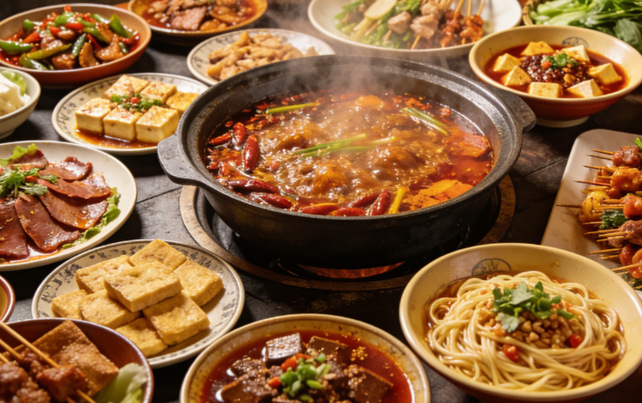
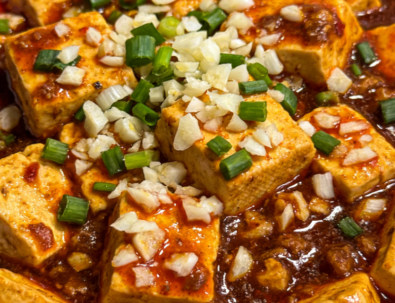
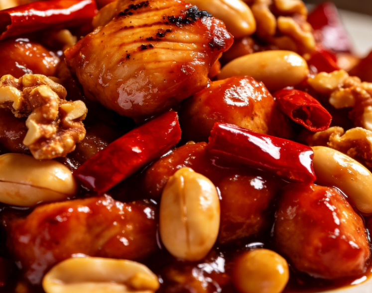
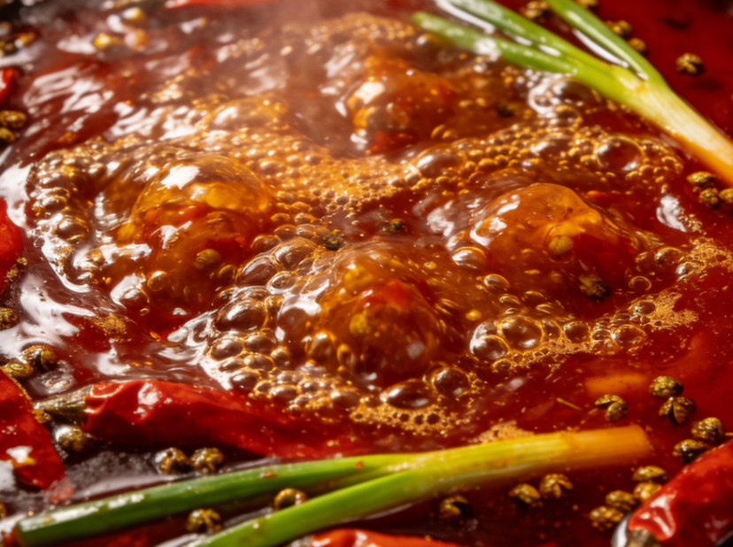
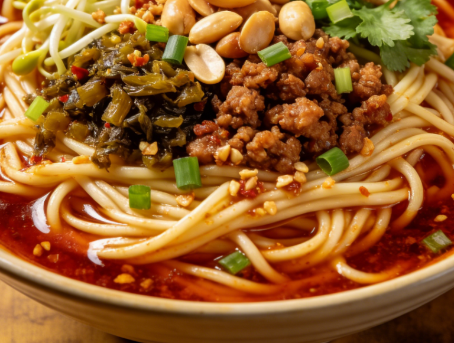

Sichuan cuisine is celebrated globally for its bold, complex flavors characterized by the unique combination of spiciness and numbing sensation known as "mala." Using Sichuan peppercorns, chili peppers, garlic, and a symphony of aromatic spices, each dish tells a story of culinary mastery passed down through generations. It is one of the Four Great Traditions of Chinese culinary art, renowned for its depth and variety.
At the heart of Sichuan cuisine lies the concept of "mala" — a harmonious marriage of numbing from Sichuan peppercorns and spicy from chili peppers. This unique flavor profile creates a tingling sensation on the tongue unlike anything else in the culinary world. Master chefs in Sichuan spend decades perfecting the balance of these flavors, creating dishes that are as complex as they are unforgettable.
Signature Dishes


Mapo Tofu
A silky tofu dish braised in a fiery sauce of minced beef, fermented chili beans, and Sichuan peppercorns. Originally created in Chengdu, this iconic dish delivers an addictive combination of heat and umami.

Kung Pao Chicken
Diced chicken stir-fried with peanuts, dried chili peppers, and vegetables in a sweet and savory sauce. Named after a Qing Dynasty official, balancing spicy, sweet, and nutty flavors perfectly.

Sichuan Hot Pot
The ultimate communal dining experience. A simmering pot of broth infused with dozens of spices and chilies, where diners cook thinly sliced meats, vegetables, and noodles at their table.

Dan Dan Noodles
Fresh noodles topped with a savory sauce of preserved vegetables, chili oil, Sichuan pepper, and minced pork. This beloved street food delivers an explosion of flavors in every bite.